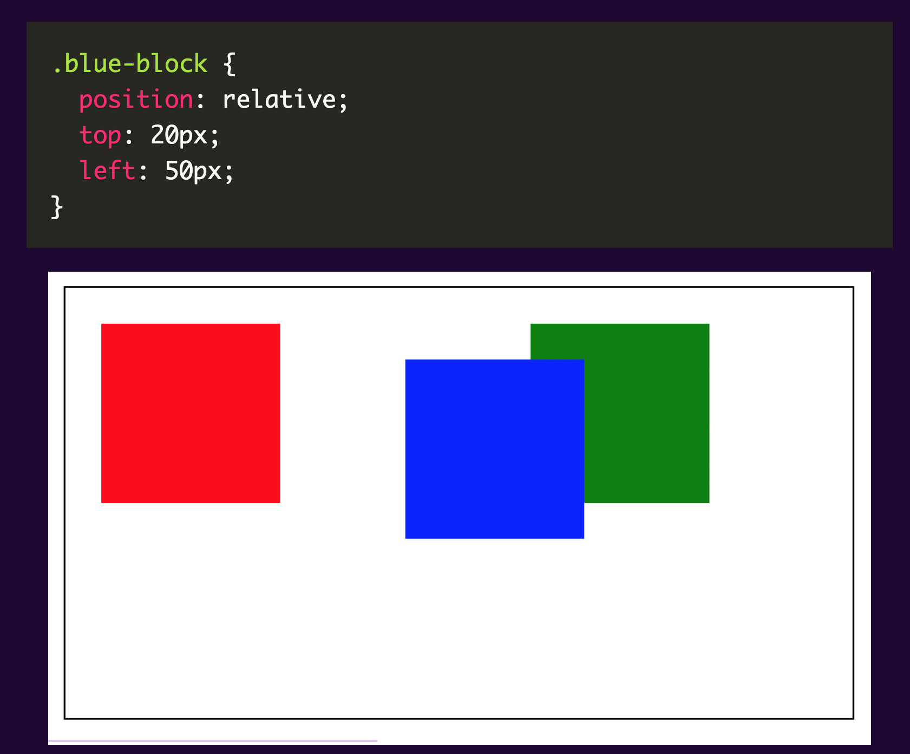

Absolute positioning elements are removed from the flow of the document, affecting layout of other elements on the page.
Please see sample below:

September 9, 2022
An element with a relative position is placed relative to its default position within the parent element. You would need to specify position attributes such as the top, right, bottom and left properties so that the element will be adjusted away from its normal position. Using these positioning elements moves the elements around the default position without affecting others.
Please see sample below:

We changed the position of the blue block without affecting the position of the others.
An element with an absolute position allows you to literally place any page element exactly where you want it. It is placed relative to the nearest positioned ancestor. We use the position attributes top, left, bottom and right to set the location. If there are no positioned ancestors , it uses the document body and moves along with the page scrolling.
Absolute positioning elements are removed from the flow of the document, affecting layout of other elements on the page.
Please see sample below:
The blue block’s space is now occupied by the green block. Currently, the absolute element (blue block) has no relationship with the container.
A fixed position element is positioned relative to the viewport. The viewport doesn’t change when the window is scrolled. A fixed positioned element will stay in its place even when the page is scrolled. A good example of this one is a navigation bar that you want to remain visible all the time even when scrolling the page. The fixed element only respects the viewport regardless of the relative parent.
Please see sample below:


The viewport is the only one respected by the fixed element regardless of the relative parent.